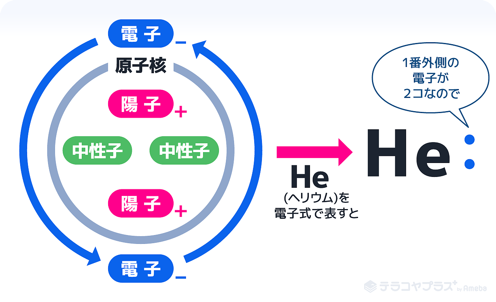
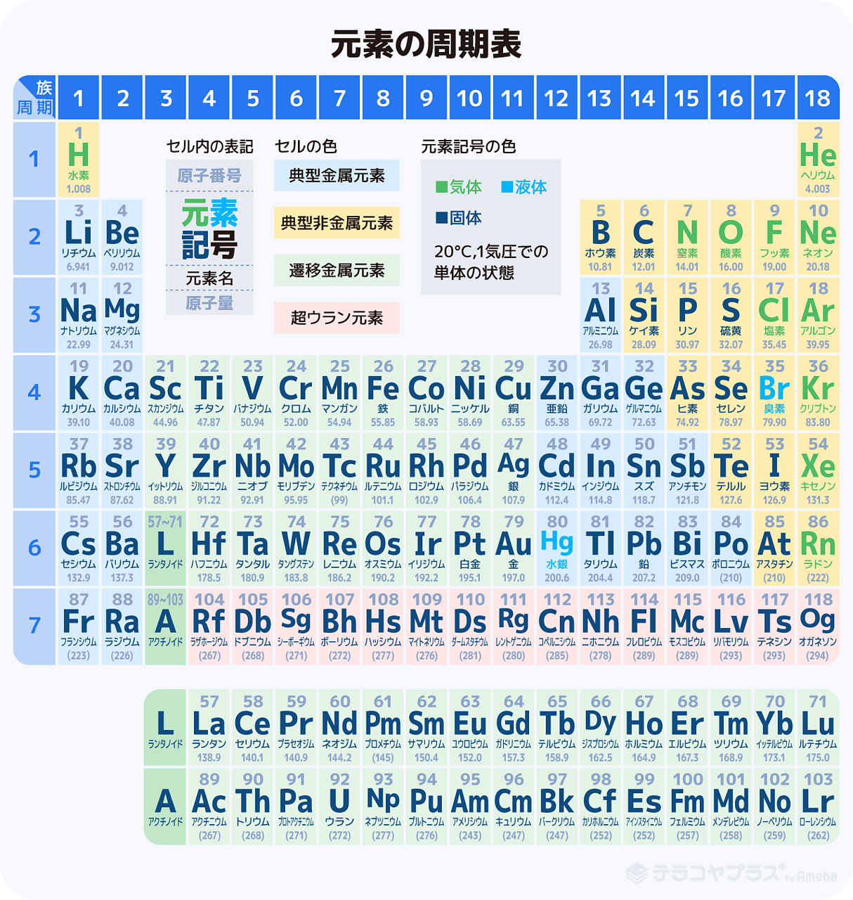

元素
元素（element）は、物質を構成する基本的な成分。
原子
原子（atom）とは、元素の最小単位で、その実態は原子核と電子の電磁相互作用による束縛状態にあり、物質の一つの中間単位。
原子と元素の違い
元素は物質の種類（成分）の事を表し、原子はその粒粒の事を表す。元素は1種類、2種類…と数えるが、原子は1粒、2粒と数える。
原子を構成する物質
- 原子核：原子の中心にある。中に陽子があるのでプラスの電気を帯びている
- 電子：原子核の中心を回っていて、マイナスの電気を帯びている粒
- 陽子：原子核の中にあり、プラスの電気を帯びている粒
- 中性子：電気を帯びていない（プラスでもマイナスでもない）粒

原子番号と質量数
原子番号は陽子の数を元につけられていて、例えば水素は陽子の数が1個、ヘリウムは2個、炭素は6個である。
質量数は原子の重さを表すことで、陽子と中性子を足した数で表す（電子は原子よりはるかに軽いので無視する）。
中性子の役割
中性子は、原子核に集まっている陽子がプラス同士で反発してバラバラにならないように抑えるノリのような役割をしている。
水素に中性子がない（陽子と電子だけで構成されている）のは、陽子が1つしかなく、反発の仕様がないからである。
陽子の数が増えていくとプラス同士の反発力も大きくなるので、中性子も増えていく。
周期表
酸素は"O"、水素は"H"…など元素をアルファベットで表したものを元素記号といい、それぞれに原子番号が割り当てられている。
原子を原子番号順に並べ、性質の類似した元素が縦に並ぶように配置した表を周期表という。

基本的な周期表
- H:水素
- He:ヘリウム
- Li:リチウム
- Be:ベリリウム
- B:ホウ素
- C:炭素
- N:窒素
- O:酸素
- F:フッ素
- Ne:ネオン
- Na:ナトリウム
- Mg:マグネシウム
- Al:アルミニウム
- Si:ケイ素
- P:リン
- S:硫黄
- Cl:塩素
- Ar:アルゴン
- K:カリウム
- Ca:カルシウム
分子式
1つの分子を構成する元素とその数をただ単に羅列したもの。
例1. 酢酸：C2H4O2
例2. グルコース：C6H12O6
組成式
分子式を最も小さい比率(存在比)にあらわしたもの。
例1. 酢酸：CH2O
例2. グルコース：CH2O
上記の通り、組成式だと酢酸とグルコースが同じ式になる。
電子式
元素記号の周りの最も外側の電子（最外殻電子）だけを"・"で表した式のこと。
主に、不対電子と電子対を可視化するのに用いる。
構造式
化合物の原子構造(結合の順序・結合の仕方・立体的な情報)を表した式のこと。
化合物とは2種類以上の元素が結び付いた物質の事。
つまり構造式は、化合物がどのように結合しているのかを表した式のこと。
主に有機物を表すのに使われる。
イオン式
イオンを元素記号と価数で表したもの。